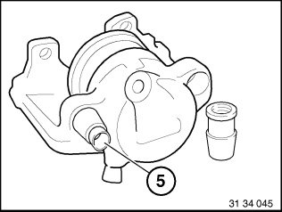
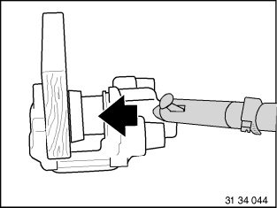
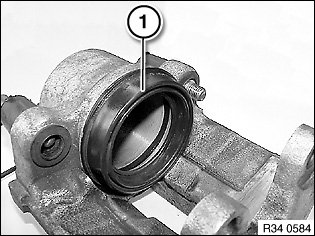
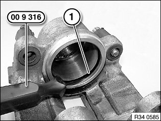
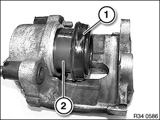

34 21 812 Overhauling Left or Right Rear Brake Caliper (Brake Caliper Removed)
34 21 812 Overhauling left or right rear brake caliper (brake caliper removed)Special tools required:
Warning!
In the following work step, large forces occur at the brake caliper piston (up to more than 2800 N).
Risk of injury!
Note:
Use repair kit, refer to BMW Parts Department.

Check guide sleeves (5), fitting repair-kit guide sleeve if necessary.

Carefully force piston out through connection bore with compressed air.
To protect piston, place a protective plate (e.g. hard wood or hard felt) in caliper recess.
Do not grip piston with fingers - risk of trapping!
Press off dust sleeve (1).


Carefully remove sealing ring (1) special tool 00 9 316.
Clean cylinder bores and parts with alcohol and dry with compressed air.
Thoroughly inspect cylinder bore, piston and flange surfaces. Machining of cylinders and pistons is not permitted.
Install new seal.
Installation:
Apply a light coat of Ate brake cylinder paste to cylinder bore, piston and seal, refer to BMW Service Operating Fluids.

Fit dust sleeve (1) in annular groove of piston (2).
Press piston into cylinder bore.
Important!
Do not twist brake piston.
Evenly press dust sleeve (1) onto brake caliper housing as far as it will go.
Installation:
The area between the dust sleeve and the brake caliper housing must be kept dry. It must not come into contact with Ate brake cylinder paste or brake fluid so as to ensure that the dust sleeve is perfectly seated.